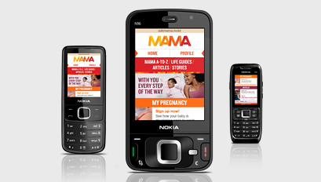

The Mobile Alliance for Maternal Action (MAMA) is a global movement that seeks to use mobile
technologies to improve the health and lives of mothers in developing nations. With the support of
founders Johnson & Johnson and USAID, MAMA is currently developing projects in South Africa,
India and Bangladesh. This site is dedicated to MAMA’s activities in South Africa.
Read. Discover. Get Involved.
technologies to improve the health and lives of mothers in developing nations. With the support of
founders Johnson & Johnson and USAID, MAMA is currently developing projects in South Africa,
India and Bangladesh. This site is dedicated to MAMA’s activities in South Africa.
Read. Discover. Get Involved.
A chance to make a difference
The South Africa Story

Maternal health in South Africa is in dire straits. It’s estimated that for every 100,000 live births in South Africa in 2012, 685 mothers will die.
South Africa is the only country not at war in which maternal mortality rates have not decreased over the past 10 years. Something must be done. Fortunately, the technology we need is freely available. There are more sim cards than human beings in South Africa and the widespread use and availability of mobile phones provides MAMA with a powerful channel to support and educate mothers, providing them with life-saving information through an incredibly intimate medium.
Making access a priority
5 Mobile Channels
MAMA SA comprises of 5 mobile channels, through which we aim to support, inform and empower moms, and women of child-bearing age in South Africa.
Through these channels, we aim to reach women in a broad range of income groups and in a range of mobile phone technologies that the mom is already using and already feeling comfortable with.
Founders


SA Partners